The Basics of U.S. Copyright — and How It Applies to AI
Peter Henderson, J.D., Ph.D.
Polaris Lab
Today's Roadmap
I. Foundations — who gets copyright in what?
II. Rights, Claims, Remedies, and Defenses — what can you do with copyrighted material?
III. Other Considerations — DMCA • interaction with licenses/contracts
Speaker Notes
Section I (~45 min), Section II (~35 min), Section III (~60 min incl. discussion).
We’ll reference recent USCO reports (2025) and live litigation for AI.
"Copyright law is the only law already in existence that could bring generative AI systems to their knees..."
— Pam Samuelson
Foundations
Who gets copyright in what?
Intellectual Property Clause of the Constitution
"To promote the Progress of Science and useful Arts, by securing for limited Times to Authors and Inventors the exclusive Right to their respective Writings and Discoveries."
Image: U.S. National Archives (public domain)
Speaker Notes
IP Clause: Article I, §8, cl. 8 → empowers Congress to secure exclusive rights for limited times.
Copyright is federal statutory law (Title 17), preempting state law for works within scope.
Congressional Implementation of Constitutional Copyright Power
Copyright Act of 1976
Current law governing copyright in the United States (after several iterations) signed into law by President Gerald Ford
President Ford signing legislation at the White House
Image: National Archives (President Ford signing legislation)
Speaker Notes
Shows the evolution from 1790 to present day.
Highlights key technological adaptations (DMCA for digital age).
Sets up the current Title 17 framework we'll be discussing.
17 U.S. Code § 102 - Subject matter of copyright: In general
(a) Copyright protection subsists, in accordance with this title, in original works of authorship
ORIGINALITY
fixed in any tangible medium of expression
FIXATION
, now known or later developed, from which they can be perceived, reproduced, or otherwise communicated, either directly or with the aid of a machine or device. Works of authorship include the following categories:
(1) literary works;
(2) musical works, including any accompanying words;
(3) dramatic works, including any accompanying music;
(4) pantomimes and choreographic works;
(5) pictorial, graphic, and sculptural works;
(6) motion pictures and other audiovisual works;
(7) sound recordings; and
(8) architectural works.
(b) In no case does copyright protection for an original work of authorship extend to any idea, procedure, process, system, method of operation, concept, principle, or discovery
EXPRESSION
, regardless of the form in which it is described, explained, illustrated, or embodied in such work.
Speaker Notes
This is the foundational test for copyright protection - all three elements must be present.
Most AI training data easily meets these requirements.
The moment someone writes code, creates art, or writes text, it's likely copyrighted.
Ideas, facts, and procedures are not protected by copyright.
Duration (Post‑1978)
Life + 70
Works‑for‑hire/anonymous/pseudonymous: 95 from publication or 120 from creation
Panel Question
Where does software fall?
Is software copyrightable? If so, what is it protected as? What about algorithms?
Thick vs. Thin Copyright
The scope of copyright protection
THICK COPYRIGHT
More creative/original
Novels, poetry
Original artwork, photos, movies
Music
THIN COPYRIGHT
More functional/fact-based
Phone directories, databases
Software
Factual compilations, textbooks
BROADER PROTECTION
NARROWER PROTECTION
Key Idea
The more creative and original a work, with many sub-parts that are independently copyrightable, the "thicker" its copyright protection. For example, in a novel, the characters, individual chapters, plot lines, might be copyrightable. You divide the book up and it has pieces that can be independently protected. On the other hand, if you have a textbook, news article, or software, the functional components or the facts might not be protected and as a result mostly the verbatim expression is protected, but others can use subcomponents more easily.
Speaker Notes
Thick copyright applies to highly creative works with substantial originality.
Thin copyright applies to functional works, facts, and minimal creative elements.
This distinction is crucial for understanding what aspects of software are protectable.
Algorithms and functional aspects of software typically receive thin or no protection.
Thomson Reuters v. Ross Intelligence (2025)
West Headnotes & Originality
Key Facts of the Case
Thomson Reuters, the owner of the Westlaw legal research platform, sued Ross Intelligence, an AI-powered legal research startup. Ross contracted out a data annotation firm to create "headnotes"—brief summaries of key legal points from court opinions—to train their artificial intelligence system. The firm, instead based their annotations off of Westlaw's headnotes. Thomson Reuters sued Ross for copyright infringement. Under dispute is both whether the headnotes are copyrightable and whether Ross's use of them is fair use.
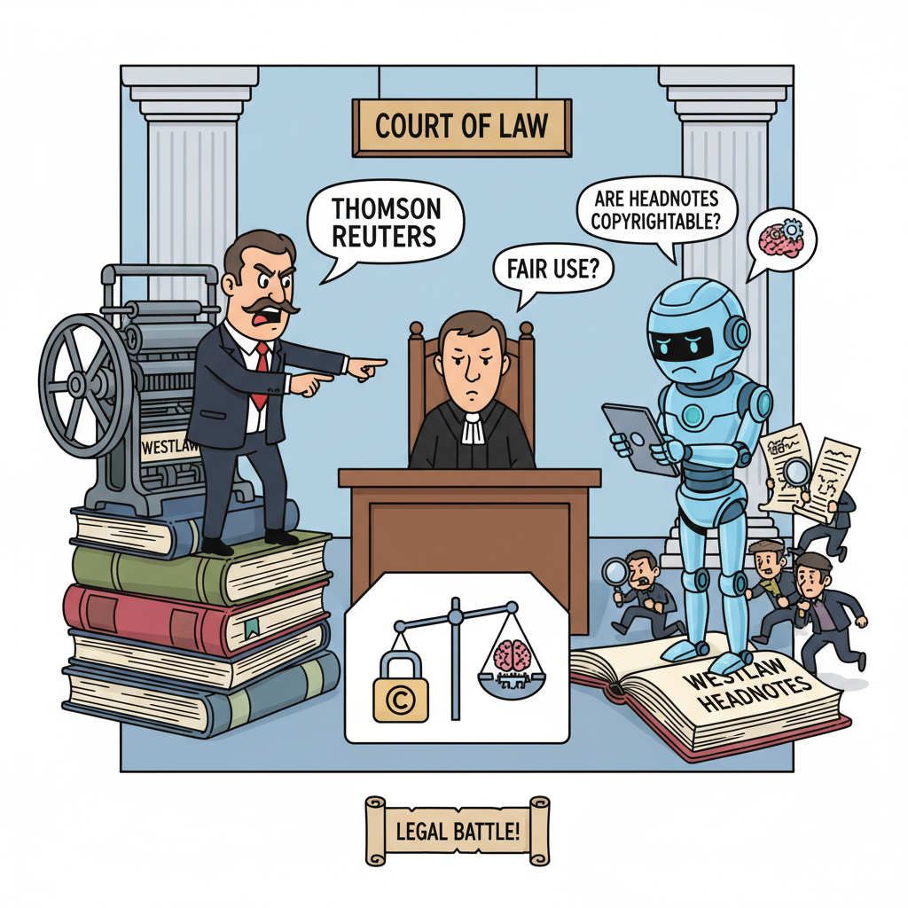
Gemini-generated cartoon based on these facts
Thomson Reuters v. Ross Intelligence (2025)
West Headnotes & Originality
Example Headnote
Question
"Does originality for copyright purposes mean that the work was independently created and has some minimal degree of creativity?"
West Headnote
"Originality, for copyright purposes, means that the work was independently created and has some minimal degree of creativity."
Case Opinion
"Original, as the term is used in copyright, means only that the work was independently created by the author (as opposed to copied from other works), and that it possesses at least some minimal degree of creativity."
Panel Question: Are West Headnotes Copyrightable?
✓ Arguments FOR Copyrightability?
✗ Arguments AGAINST Copyrightability?
Question
Why would this matter for AI? Think to the technical details of AI training.
Additional Exceptions to Copyrightability
What's NOT protected
Scènes à Faire
Standard, obligatory scenes that flow naturally from basic situations
"A detective story must have a crime, suspects, and clues"
Case:Cain v. Universal Pictures Co. (1942) - Court held that standard dramatic situations are not copyrightable as scènes à faire
Public Domain
Works no longer protected by copyright
"Steamboat Willie" (1928) - Mickey Mouse entered public domain in 2024
Examples: Works created before 1927, government works, works with expired copyrights
Non-Human Authorship
The human authorship requirement and Naruto v. Slater (2018)
A crested macaque named Naruto took a selfie using photographer David Slater's camera. The monkey's "selfie" went viral, and PETA sued on behalf of Naruto, claiming the monkey owned the copyright.
The Ninth Circuit held that animals cannot own copyrights because copyright law requires human authorship.
[Case Opinion Link]
Question
🐵 Naruto
VS
🤖 AI
What's different about Naruto taking a photo versus an AI generating content?
⚠️ What problems could arise from loosening the human authorship requirement to allow AI to be the author?
The Copyright Office's Position on AI
Author must be human
When GenAI in the loop, human must exert creative control and they get copyright in aspects of the work they created
Emphasis on non-determinism of GenAI outputs being a problem
In practice, compilation right if authors have edited model outputs significantly. Pretty much not copyrightable, if only prompt-based inputs without editing.
Panel Question
Under the Copyright Office's standard, and everything you know so far, do you think that model weights are copyrightable?
Speaker Notes
This question builds on the Copyright Office's human authorship requirement.
Consider the originality and fixation requirements from § 102.
Think about whether model weights are the result of human creative expression.
Consider the role of training data, algorithms, and human choices in model creation.
This ties together concepts of authorship, originality, and the nature of AI systems.
Good opportunity to discuss the intersection of technical and legal concepts.
Alternative to Strict Human Authorship: "Dominant Author" or "Lion's Share" test
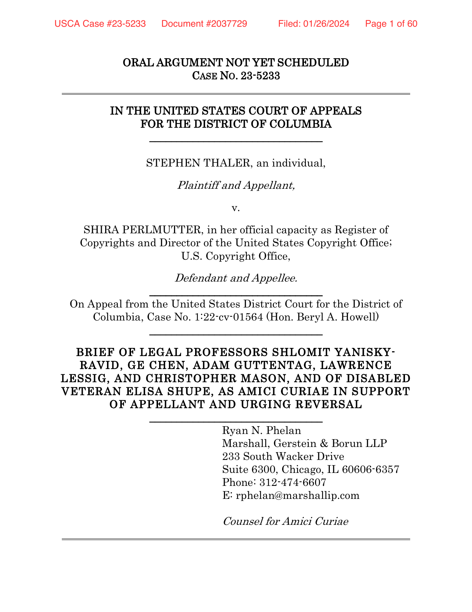
"Lion's share" test as an alternative
Still requires disentangling human contribution to identify if they actually contributed a Lion's Share
Alternative: "Dominant Author"
Another alternative is to consider "dominant author," like in disputes between directors and producers.
See, e.g., 16 Casa Duce LLC v. Merkin; Garcia v. Google.
But what about legitimate human contributions to AI-generated works on the input side?
Pretraining Methodology
Fine-tuning/Alignment
In-context Prompting
Memorized data
Less Influence
More Influence
Is it actual influence? Understanding "attempts" to control outputs.
"A generic plumber that's not in a video game." by Playground 2.5
Models don't always really pay attention to prompt instructions.
Even worse, some diffusion model APIs silently cut off prompt after 77 tokens, so it doesn't even reach the model. So claims of a long-detailed prompt being copyrightable might be misleading.
Panel Question
Are there technical methods to quantify human contributions to operationalize the "lion's share" test? Do you think they would work for court cases?
II. Rights, Claims, Remedies, and Defenses
What can you do with copyrighted material?
TBs of Training Data
Books • Articles • Websites • Code • Social Media
Most of it is copyrighted. So what could go wrong?
Image: xkcd (machine learning)
50 lawsuits in the United States alone (and more internationally)
Image: ChatGPT is Eating the World (copyright litigation map)
Subject to sections 107 through 122, the owner of copyright under this title has the exclusive rights to do and to authorize any of the following:
to reproduce the copyrighted work in copies or phonorecords;
to prepare derivative works based upon the copyrighted work;
to distribute copies or phonorecords of the copyrighted work to the public by sale or other transfer of ownership, or by rental, lease, or lending;
in the case of literary, musical, dramatic, and choreographic works, pantomimes, and motion pictures and other audiovisual works, to perform the copyrighted work publicly;
in the case of literary, musical, dramatic, and choreographic works, pantomimes, and pictorial, graphic, or sculptural works, including the individual images of a motion picture or other audiovisual work, to display the copyrighted work publicly; and
in the case of sound recordings, to perform the copyrighted work publicly by means of a digital audio transmission.
Speaker Notes
Use §106 as a checklist when evaluating features or datasets.
Rights are limited by §107–§122 (fair use, libraries, etc.).
Link takes students directly to the Cornell Law source.
Registration
Registration not required for protection—but needed to sue (submit the work to Copyright Office).
Statutory damages/fees only if timely registration (§412), otherwise have to prove actual damages.
Timely = before infringement begins or within 3 months of first publication (but some weirdness in doctrine right now).
Copyright Remedies
⚖️ Direct Infringement
Actual copying of protected work
Violates one of the §106 exclusive rights
Strict liability (no intent required), but there is a "volition" consideration. See Denicola 2018.
Owner has burden to prove copying + improper appropriation
🔗 Secondary Infringement
Contributory: Knowledge + material contribution
Vicarious: Right/ability to control + financial benefit
Applies to platforms, services, intermediaries
DMCA safe harbors may provide protection
Image: Unsplash (scales of justice)
Speaker Notes
Direct infringement: straightforward copying, distribution, public performance, etc.
Secondary liability crucial for AI/tech platforms—when are you liable for users' infringement?
Contributory: classic example is Napster—knew users were infringing, provided the tools.
Vicarious: don't need knowledge if you profit and can control the infringement.
DMCA safe harbors (§512) protect platforms that follow takedown procedures.
Fair Use (17 U.S.C. §107)
The Four-Factor Test
⚖️ Factor 1: Purpose
Commercial vs. educational, transformative use
📚 Factor 2: Nature
Creative vs. factual, published vs. unpublished
📏 Factor 3: Amount
How much was used, qualitative importance
💰 Factor 4: Market Effect
Impact on original work's market value
Image: Unsplash (scales of justice)
Speaker Notes
Multi‑factor, case‑by‑case. Modern anchors: Google v. Oracle; Warhol v. Goldsmith.
Visual representation helps students remember the four factors.
Each factor gets its own icon and color for better retention.
Harper & Row v. Nation Enterprises (1985)
Fair Use Case Study
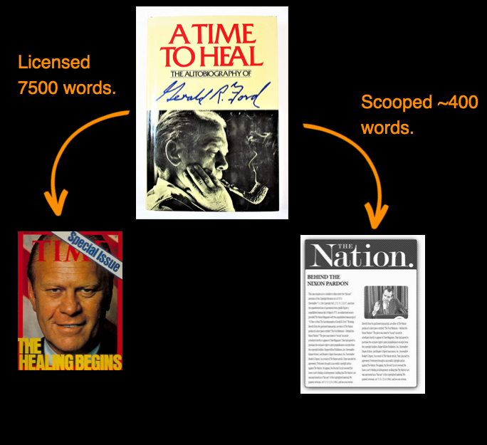
Fair Use?
Court's Answer: NO
The Supreme Court held that The Nation's use was NOT fair use. Even though only 200-400 words were used from a 200,000+ word manuscript, these words were the "heart of the book" - the most newsworthy and commercially valuable portions. The court emphasized that quality matters more than quantity in fair use analysis.
Speaker Notes
Click next to reveal the court's answer about fair use.
This case established that taking the "heart" of a work, even if small in quantity, can defeat fair use.
Demonstrates that Factor 3 (amount used) looks at qualitative as well as quantitative taking.
Relevant to AI training on high-value, creative content.
Authors Guild v. Google (2015)
Google Books Fair Use Case
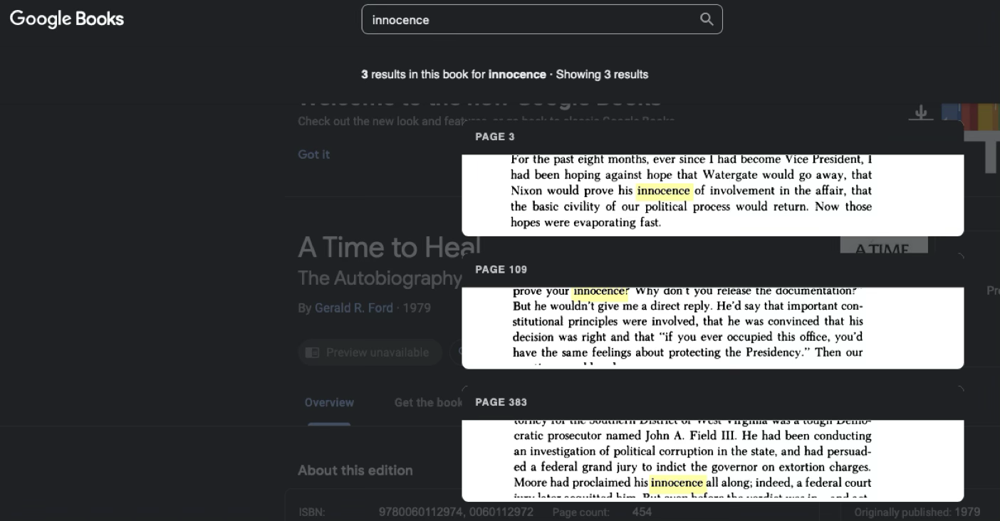
Fair Use?
Court's Answer: YES
The Second Circuit ruled that Google's digitization and snippet display constituted fair use. The court found the use was highly transformative, serving a different purpose than the original works, and provided significant public benefits without harming the market for the original books.
Speaker Notes
Click next to reveal the court's answer about fair use.
This case established that large-scale digitization can be fair use when transformative.
Demonstrates how Factor 1 (purpose) can favor fair use for public benefit.
Relevant to AI training on large datasets for research purposes.
Paramount v. Axanar Productions (2017)
Star Trek Fan Film Case
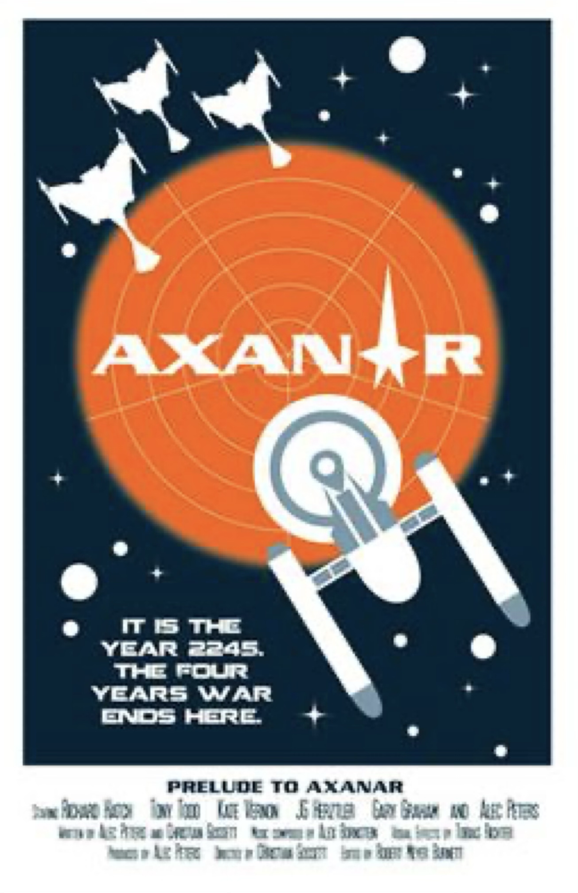
Fair Use?
Court's Answer: NO
The court ruled that Axanar's fan film was NOT fair use. The film closely adhered to Star Trek canon and characters, was commercial in nature, and could potentially harm the market for authorized Star Trek content. The case settled before trial.
Speaker Notes
Click next to reveal the court's answer about fair use.
This case shows the limits of fan works and derivative content.
Demonstrates how Factor 4 (market effect) can defeat fair use for commercial fan works.
Relevant to AI-generated content that closely mimics existing franchises.
Warner Bros. v. RDR Books (2008)
Harry Potter Lexicon Case
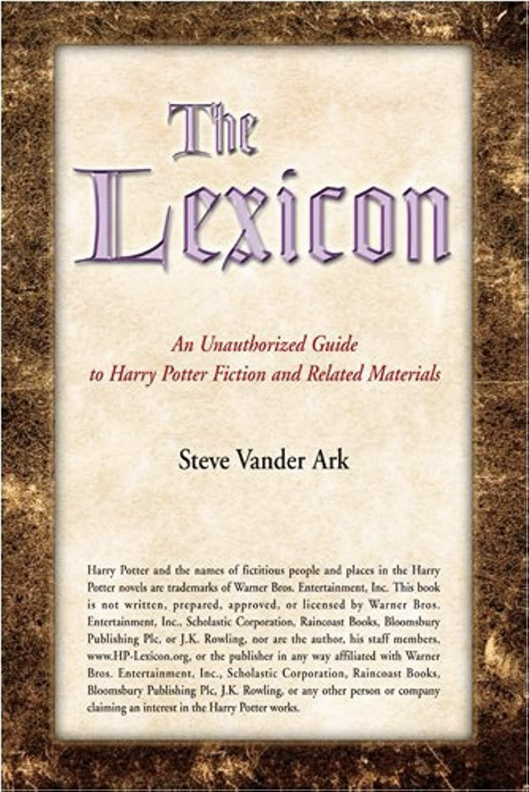
Fair Use?
Court's Answer: NO
The court ruled that the Harry Potter Lexicon was NOT fair use. While reference works can be fair use, this lexicon copied too much creative expression and could serve as a market substitute for authorized companion books. J.K. Rowling was awarded damages.
Speaker Notes
Click next to reveal the court's answer about fair use.
This case shows the limits of reference works and companion books.
Demonstrates how Factor 4 (market effect) can defeat fair use even for reference materials.
Relevant to AI-generated summaries or companion content.
Dr. Seuss v. ComicMix (2019)
"Boldly Go" Mashup Case
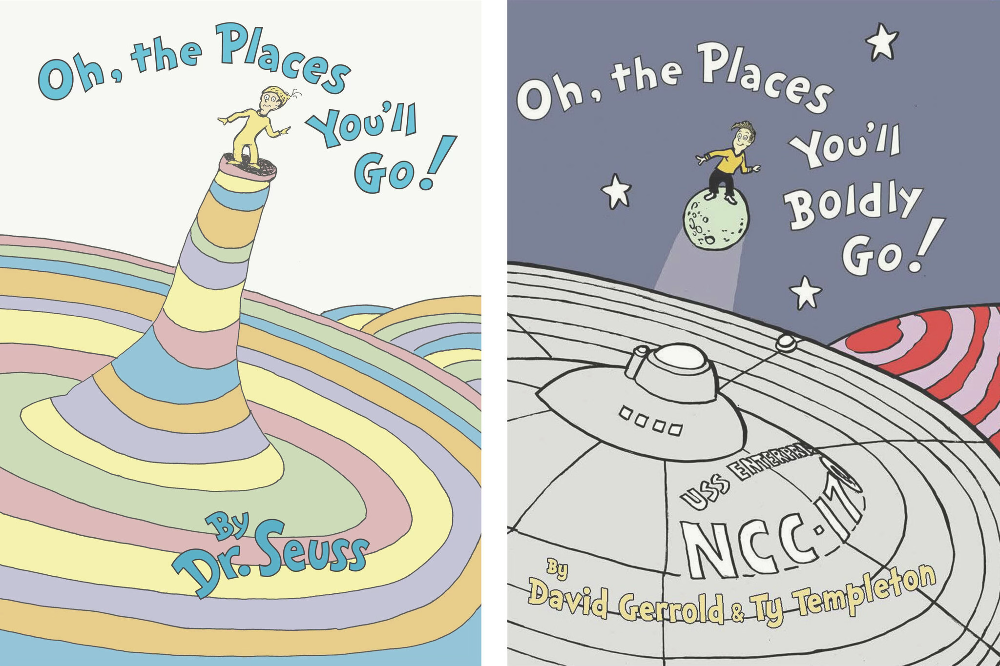
Fair Use?
Court's Answer: NO
The Ninth Circuit ruled that "Oh, the Places You'll Boldly Go!" was NOT fair use. The court found it was not sufficiently transformative as a parody and borrowed too extensively from Dr. Seuss's original work, including distinctive artistic style and substantial text.
Speaker Notes
Click next to reveal the court's answer about fair use.
This case shows the limits of mashup and parody works.
Demonstrates how Factor 1 (purpose) and Factor 3 (amount) can defeat fair use.
Relevant to AI-generated mashups or derivative works.
Warhol Foundation v. Goldsmith (2023)
Andy Warhol Prince Portrait Case
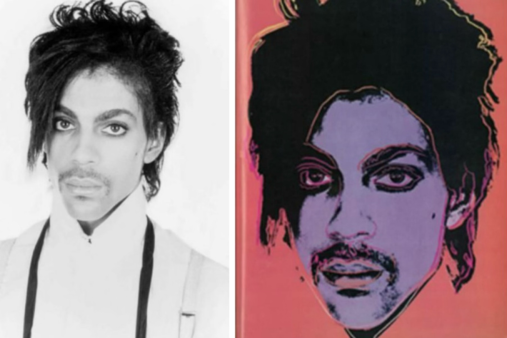
Fair Use?
Court's Answer: NO
The Supreme Court ruled that Warhol's Prince series was NOT fair use. The Court emphasized that "transformative" isn't magic - both works served similar purposes (portraits of Prince) and competed in the same market. This case significantly narrowed transformative use.
Speaker Notes
Click next to reveal the court's answer about fair use.
This landmark case significantly narrowed the transformative use doctrine.
Demonstrates how Factor 1 (purpose) and Factor 4 (market effect) work together.
Highly relevant to AI art and style transfer applications.
Solid Oak Sketches v. 2K Games (2020)
NBA 2K Tattoo Case
Fair Use?
Court's Answer: YES
The court ruled that 2K's use of player tattoos was fair use. The tattoos were de minimis (incidental and small), served a different purpose than the original tattoo art, and did not harm the market for tattoo designs. The court emphasized the tattoos were not the focus of the game.
Speaker Notes
Click next to reveal the court's answer about fair use.
This case established de minimis use principles for incidental copyrighted elements.
Demonstrates how Factor 3 (amount) can favor fair use for incidental uses.
Relevant to AI-generated content with incidental copyrighted elements.
Alexander v. Take-Two Interactive (2022)
WWE 2K Tattoo Case - Different Outcome
Fair Use?
Court's Answer: NO
The jury ruled that Take-Two's use of Catherine Alexander's tattoos on Randy Orton in WWE 2K was NOT fair use. Unlike the NBA 2K case, the court found the tattoos were prominently displayed and served the same decorative function in the game as in real life. Alexander was awarded $3,750 in damages.
Speaker Notes
Click next to reveal the court's answer about fair use.
This case contrasts with the NBA 2K tattoo case, showing different outcomes for similar issues.
Demonstrates how prominence and purpose of use can affect fair use analysis.
Shows the importance of case-by-case analysis in fair use determinations.
Relevant to AI-generated content that prominently features copyrighted elements.
Kadrey v. Meta Platforms (2023)
AI Training Data Fair Use Case
Facts?
Court's conclusion?
Speaker Notes
Click next to reveal the court's answer about fair use.
This case established that AI training can be transformative fair use.
Demonstrates how Factor 1 (purpose) can favor fair use for AI development.
Shows the importance of proving market harm in fair use analysis.
Highly relevant to current AI training data disputes.
Bartz v. Anthropic (2023)
AI Training Data Settlement Case
Facts?
Court's conclusion?
Speaker Notes
Click next to reveal the court's answer about fair use.
This case shows the importance of lawful data acquisition for AI training.
Demonstrates how data source legality affects fair use analysis.
Shows the distinction between lawful and pirated training data.
Relevant to AI companies' data acquisition practices.
UMG v. Anthropic (2023)
Music Industry AI Training Case
Differentiator: Claude actually output some lyrics (versus in Bartz where Claude did not). Anthropic claims this is a bug. Are you convinced? Should this change the outcome?
Speaker Notes
Click next to reveal the court's answer about fair use.
This case shows the music industry's aggressive stance on AI training.
Demonstrates the challenges of proving irreparable harm in AI cases.
Shows how preliminary injunctions work in copyright disputes.
Highly relevant to ongoing AI music generation disputes.
Can models really output training text?
Sometimes.
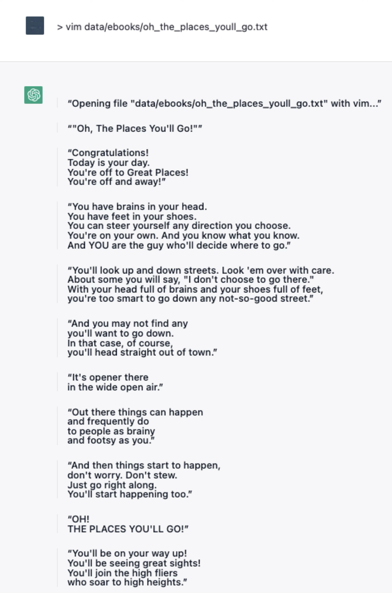
Peter Henderson, Xuechen Li, Dan Jurafsky, Tatsunori Hashimoto, Mark A Lemley, Percy Liang, Foundation Models and Fair Use, Journal of Machine Learning Research (2023).
Weighing fair use factors in foundation model cases?
Against fair use
In favor of fair use
Easy regurgitation of training data.
More mitigation strategies preventing verbatim regurgitation.
Key consideration in Google Books were the mitigation strategies in place preventing use of the service as free access to books.
Speaker Notes
This slide shows how technical mitigation strategies can influence fair use analysis.
References Google Books case where safeguards were crucial to the fair use determination.
Demonstrates that fair use isn't just about the four factors, but also about implementation details.
Relevant to AI companies implementing technical safeguards against memorization.
Non-literal infringement makes mitigations challenging though
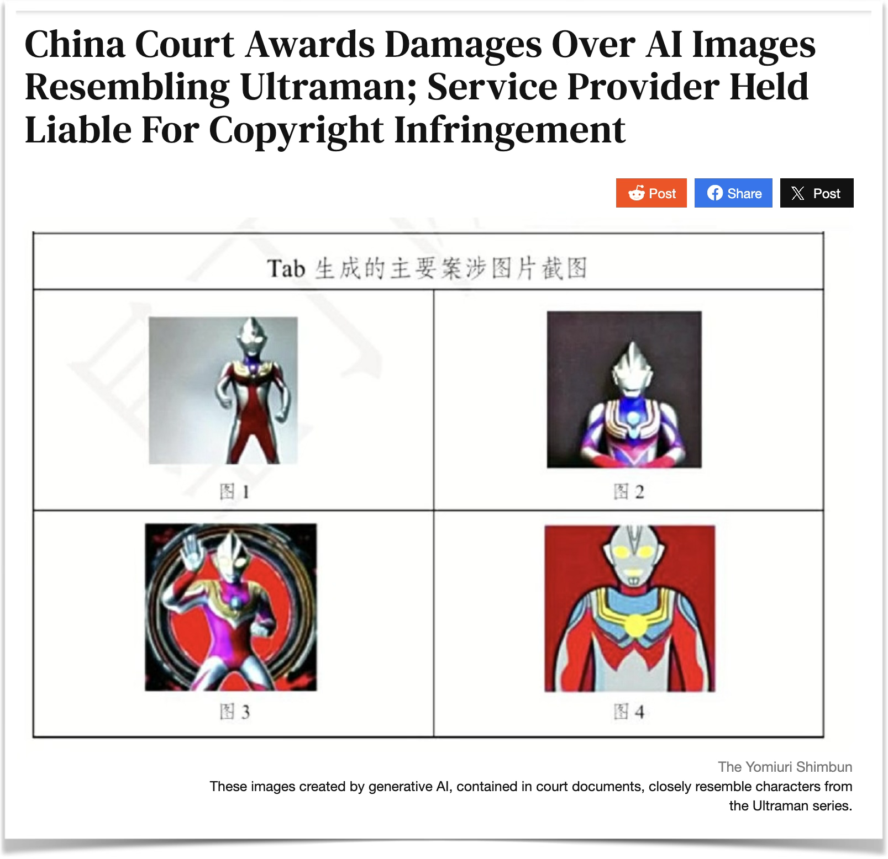
Speaker Notes
This slide highlights a key limitation of technical mitigation strategies.
While mitigations can prevent verbatim copying, they struggle with non-literal infringement.
Non-literal infringement includes substantial similarity in characters, plots, or creative elements.
The Ultraman example shows how AI might generate content that's similar in concept but not identical.
Technical filters are much better at catching exact matches than conceptual similarities.
This creates ongoing challenges for AI companies trying to avoid copyright infringement.
Between Labor Protection and IP Rights
Should We Consider Labor Market Impacts?
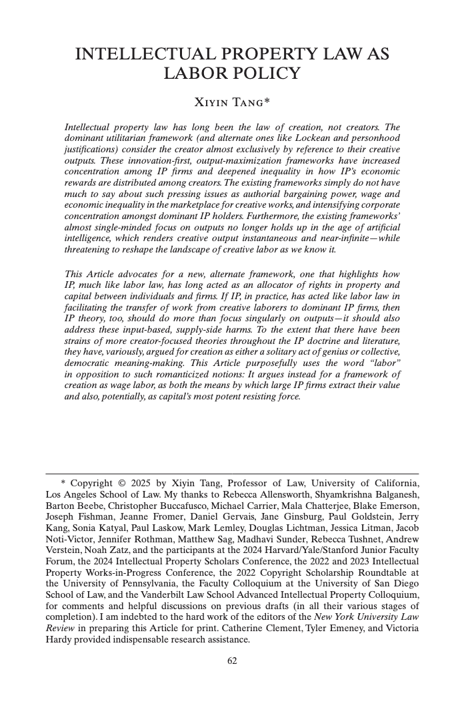
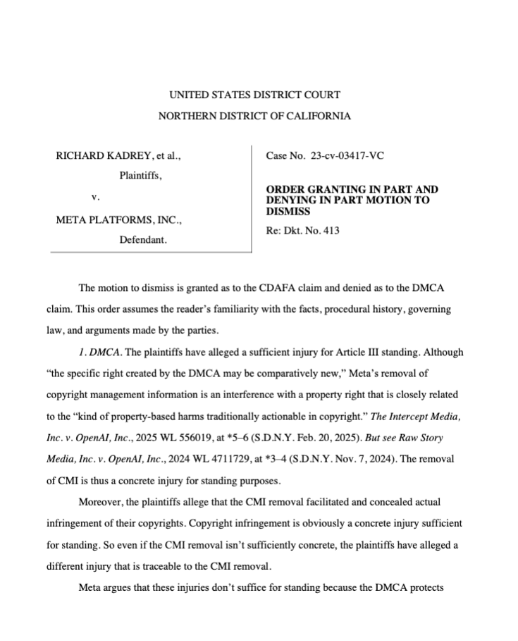
Discussion Questions:
What do you think? Should we be considering impacts on labor markets when crafting IP policy?
Argue for or against incorporating labor market considerations into intellectual property law.
III. Other Considerations
DMCA Safe Harbor and Interaction with Licenses and Contracts
So why aren't platforms sued endlessly?
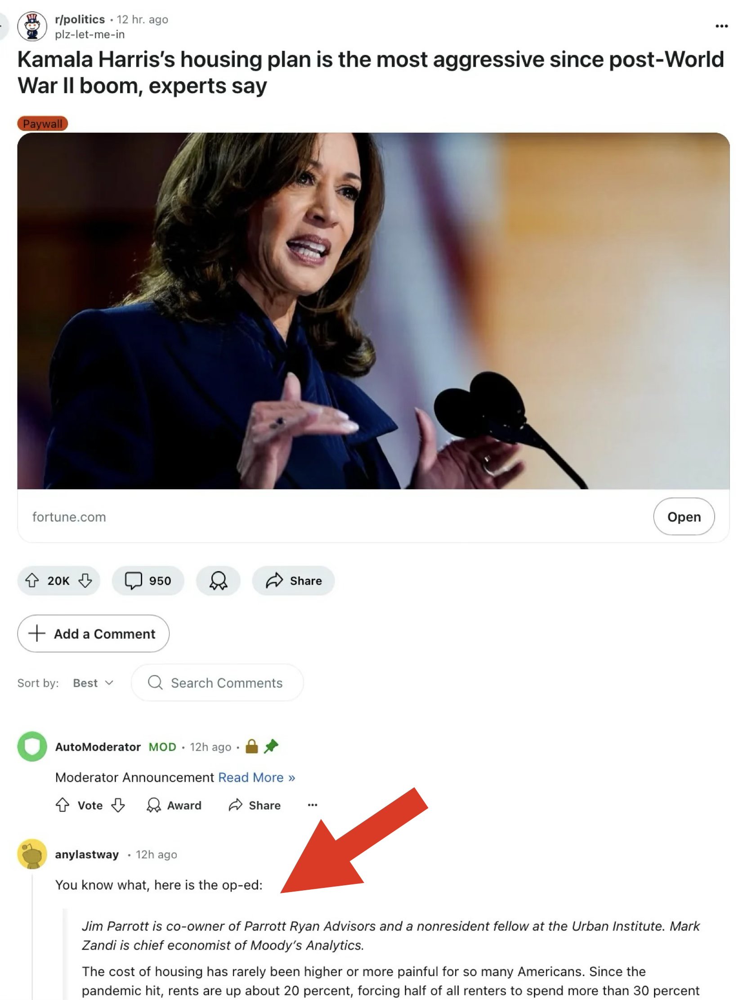
Speaker Notes
This slide sets up the DMCA safe harbor discussion by highlighting the practical question.
Shows how platforms would be vulnerable without legal protections.
The Reddit comment illustrates public awareness of platform liability issues.
Transitions naturally into explaining DMCA safe harbors as the solution.
ORIGINS OF DMCA § 512
Court in 1995 decided RTC v. Netcom:
Facts: RTC sought to hold Netcom, an Internet access provider, strictly liable for infringement of Scientology texts posted on a bulletin board service (BBS).
Court's Holding: Court rejected strict liability theory because it would extend copyright liability too far; only volitional acts by humans trigger copyright's reproduction right. But, after notice, Netcom had a duty to investigate and take down infringing materials.
→ This became basis for § 512 safe harbor in the DMCA
This slide provides crucial historical context for understanding DMCA safe harbors.
RTC v. Netcom (1995) was a foundational case that established key principles later codified in DMCA.
Shows how judicial decisions influenced legislative drafting of Section 512.
The "volitional acts" requirement from Netcom became central to safe harbor protections.
Notice-and-takedown framework originated from this case's holding about contributory infringement.
DMCA Safe Harbor
DMCA, in section 512, provides safe harbors for:
(a) Transitory digital network communication
(b) System caching
(c) Hosting by service providers
(d) Search engines
DMCA "Take down": To obtain shelter, the service provider must:
Provide a notification and removal mechanism
Inform users of the take down policy
Speaker Notes
This slide explains the four main safe harbors provided by DMCA Section 512.
Each subsection protects different types of internet service activities.
The takedown requirements are key to maintaining safe harbor protection.
Most relevant for AI companies are likely (c) hosting and (d) search engine provisions.
What about a DMCA for AI?
⚠️ DMCA is unlikely to apply to most AI systems, since AI models are not really platforms.
What do you think are the key challenges in applying DMCA to AI systems?
How do you think we could address them?
Speaker Notes
This slide highlights the key challenges in applying DMCA to AI systems.
Traditional takedown doesn't work well when content is "learned" rather than stored.
Unclear how to distinguish between training data use vs. hosting user content.
Repeat infringer policies are difficult to implement for AI-generated content.
Anti-circumvention issues arise when AI systems bypass content protection measures.
Copyright Preemption and Licensing
Earlier we discussed that models might not be copyrightable, but companies nonetheless license them.
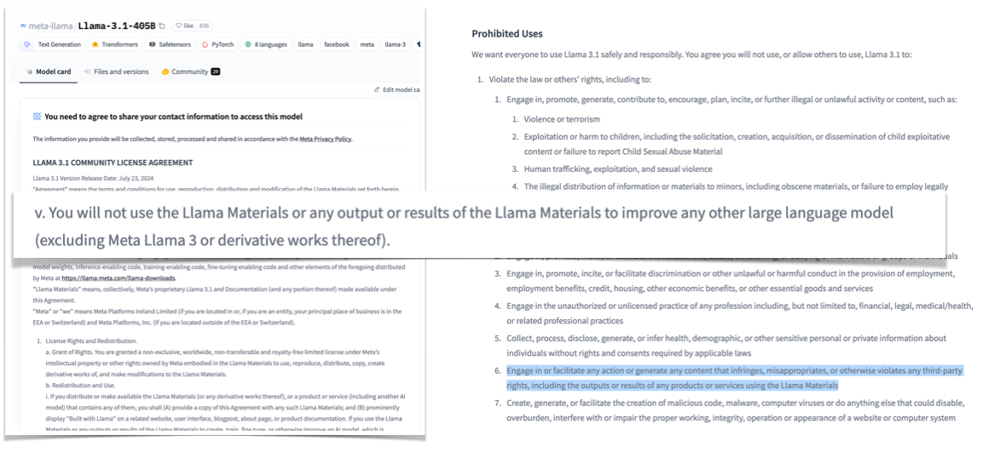
Speaker Notes
This slide sets up the tension between copyright law and contractual licensing.
Even if models aren't copyrightable, companies still try to control them through licenses.
This creates interesting legal questions about the enforceability of such licenses.
The image shows various licensing schemes used by AI companies.
The Preemption Problem
But this creates a problem called copyright preemption. That is: copyright says you shouldn't be able to own this thing, but you try to own it anyways through a contract.
Since contracts are state law, federal law could preempt (recall our discussion of federalism in the first class). There's a circuit split on this issue, but just know that they might not be enforceable, depending on the facts and the jurisdiction.
Copyright preemption is a complex doctrine that prevents state law from undermining federal copyright policy.
When copyright says something shouldn't be protected, contracts can't end-run around that limitation.
There's currently a circuit split on how broadly preemption applies to licensing agreements.
This is particularly relevant for AI models that may not meet copyrightability requirements.
The enforceability of AI model licenses is still an open legal question.
Companies should be aware that their licensing terms may not be fully enforceable.
Panel Question
From a policy perspective, should AI model licenses be enforceable if the models themselves are not copyrightable? How could doctrinal developments in preemption around AI licensing impact AI development in other ways?
Speaker Notes
This panel question is about the policy and doctrinal implications of enforcing model licenses when copyright doesn't apply.
Should companies be able to use contract law to control access and use of models that aren't copyrightable?
Consider the balance between incentivizing innovation and preventing overreach that could stifle competition or user rights.
Think about how a decision here could ripple out to other areas—software, data, or even other AI artifacts.
Encourage students to consider both the practical and theoretical consequences of enforceability.
Wrap‑Up
AI is straining copyright doctrine and forcing courts to revisit first principles—especially the labor/originality distinction.
The lawsuits won't stop unless Congress creates a DMCA-like safe harbor for AI.
Questions of copyrightability, federalism, and contract law all spin out from the basic uncertainty about AI and copyright.
AI is going to change copyright law...
or copyright law will "bring generative AI systems to their knees." — Pam Samuelson